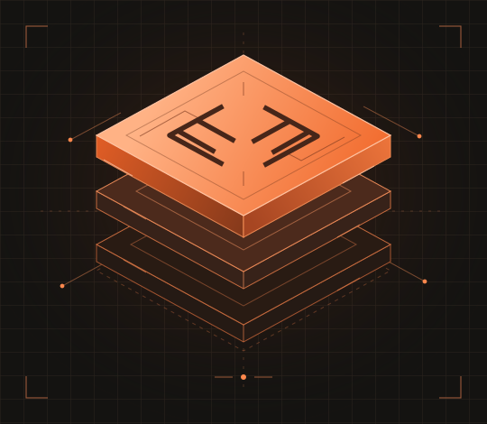

MyPOS
Sistema de punto de venta para consultar productos y stock, gestionar ventas y operar con distintos medios de pago.
Portafolio profesional
Desarrollo de software, integración de sistemas y automatización de procesos.
Trabajo desde la definición de un proceso hasta el desarrollo y la puesta en producción de las aplicaciones que lo sostienen.

01 / Trayectoria
Creé MyPOS e Invoice. También trabajo en la evolución de aplicaciones internas, la integración de sistemas y el diagnóstico de incidentes en producción.
Sistema de punto de venta para consultar productos y stock, gestionar ventas y operar con distintos medios de pago.
Sistema de facturación electrónica para emitir y validar comprobantes de la operación comercial.
02 / Desarrollo aplicado
Cofundador · Desde 2025
En 2025 me asocié con Ricardo Ortigoza y creamos devLink para desarrollar software a medida, integrar sistemas y automatizar procesos.
Visitar devLinkPlataforma que desarrollé con Ricardo Ortigoza para gestionar pedidos, pagos y operaciones de comercios.
Proyecto que desarrollé con Ricardo Ortigoza para encontrar prestadores de servicios por oficio y localidad.
Aplicación para gestionar inventario, despachos y entregas. Todavía no está implementada.
También trabajo en comercio electrónico, automatización de mensajería y control de acceso con lectores NFC.